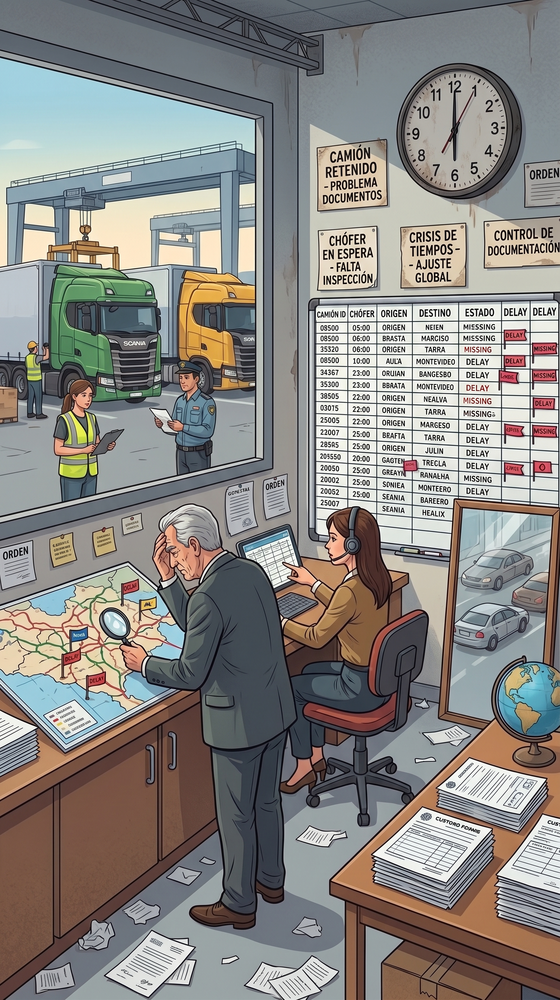
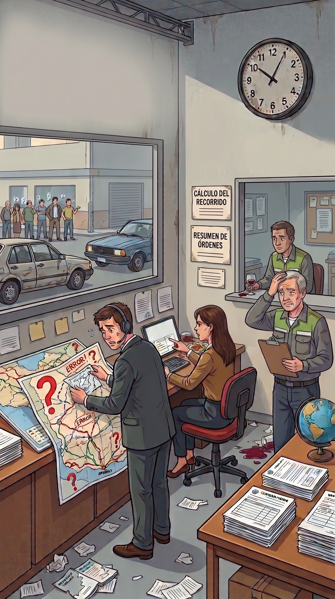

Cuantificá en tiempo real la pérdida operativa por camiones parados, rotación de choferes y sobrecarga en la coordinación de flota.
Tener una unidad detenida o cambiar constantemente de chofer afecta directamente la rentabilidad de la flota:
Cada día sin chofer es un flete no realizado mientras la amortización, el seguro y la patente de la unidad siguen corriendo. La falta de chofer frena la facturación fija.

Cuando falta un chofer, el resto del equipo absorbe los turnos o viajes extras. La fatiga acumulada incrementa exponencialmente el riesgo de siniestralidad y desgasta a los conductores clave.

Personal nuevo sin la inducción adecuada comete errores en la hoja de ruta, perjudica la relación con los cargadores y expone a la empresa a penalizaciones por incumplimiento de entrega.
Acompañamos a empresas de transporte y logística a estructurar selecciones ágiles de conductores calificados, esquemas de inducción en ruta y retención de talento para mantener la flota 100% activa.
👉 Ver Soluciones de Selección y Gestión Humana